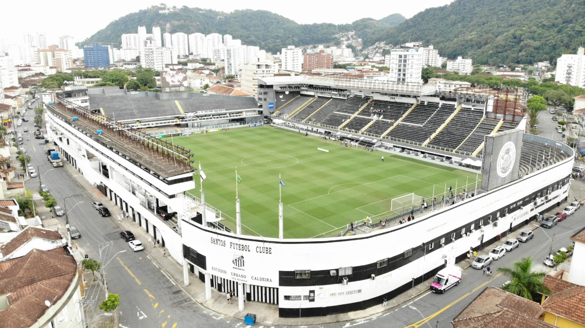
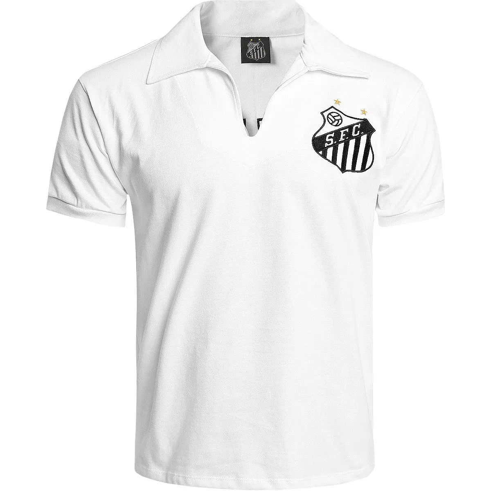

O Estádio Urbano Caldeira, mais conhecido como Vila Belmiro, é um estádio de futebol localizado no bairro homônimo, na cidade de Santos, estado brasileiro de São Paulo. Pertence ao Santos Futebol Clube e tem capacidade para 20.360 pessoas, o que faz dele o maior da Baixada Santista
O presidente do clube revelou que a demolição da Vila Belmiro começará em outubro deste ano, e a previsão para o início das obras será em janeiro de 2025. “A gente vem avançando para que o Santos tenha essa nova arena.
Em 24 de março de 1933, após o falecimento de Urbano Caldeira, o campo passou a se chamar, oficialmente, Estádio Urbano Caldeira. A sugestão foi feita por Ricardo Pinto de Oliveira em homenagem ao maior abnegado da história santista.

Camisa neymar
Lendária camisa do neymar football club de Santos com tecnologia para não sujar.

Camisa do Charlie Brown
Lendária camisa do Charlie Brown Júnior da seleção Santista.

Camisa do Pelé
Camisa rara do Pelé com tecnologia de ultima geração para evitar manchas.